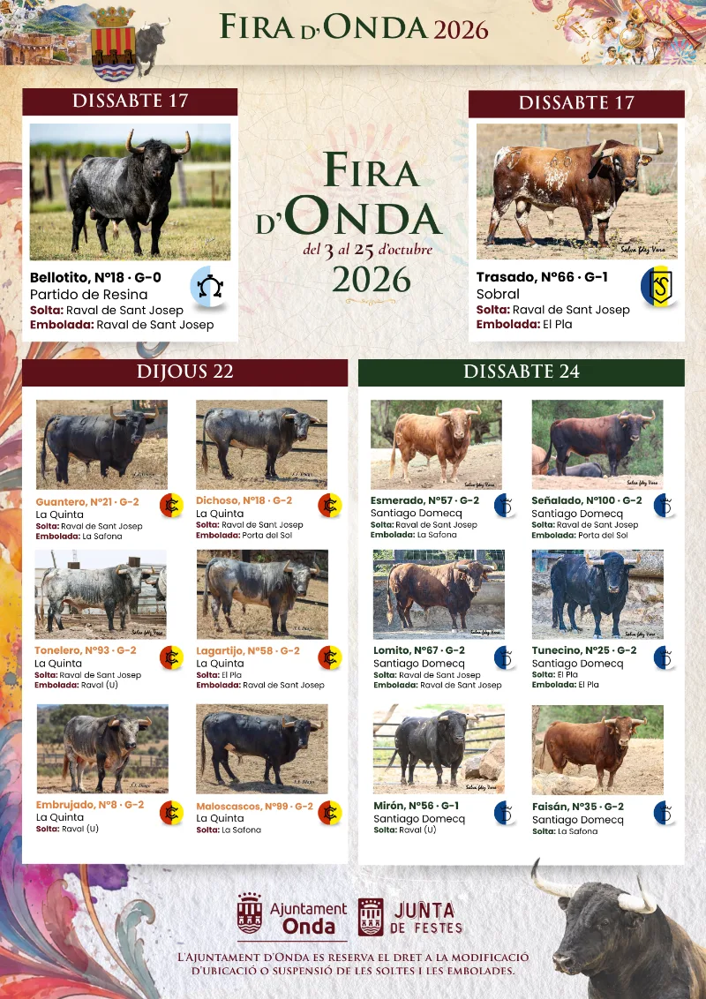
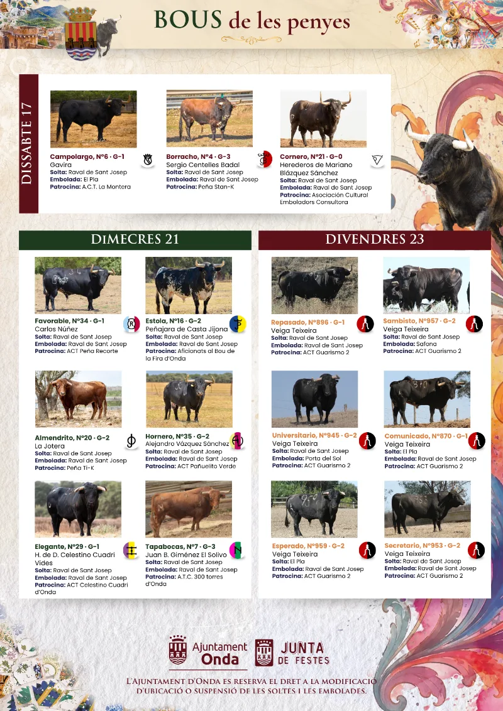

Agenda Taurina
Agenda TaurinaFira d'Onda 2026: cinco días de toros, encierros y emboladas del 17 al 24 de octubre
Partido de Resina, Cuadri, La Quinta, Veiga Teixeira y Santiago Domecq, entre las ganaderías de una de las ferias más esperadas de Castellón

La Fira d'Onda vuelve a llenar de toros el Raval de Sant Josep, El Pla, La Safona y la Porta del Sol. Son cinco días de festejos: el sábado 17 y del miércoles 21 al sábado 24 de octubre. Repasamos lo más destacado.
Sábado 17: arranque con cinco toros cerriles
La Fira abre a las 8:00h con la entrada de toros y vaquillas de Hermanos Bellés. Por la tarde, a las 17:00h, salen cinco toros: Bellotito (Partido de Resina), Trasado (Sobral), Campolargo (Gavira), Borracho (Sergio Centelles) y Cornero (Herederos de Mariano Blázquez). Por la noche se embolan en el Raval y en El Pla.
Miércoles 21: el día de las ganaderías
Por la mañana, entrada de trashumancia de Víctor Ródenas y suelta de Favorable (Carlos Núñez) y Estola (Peñajara de Casta Jijona). Por la tarde, cuatro toros de lujo: Almendrito (La Jotera), Hornero (Alejandro Vázquez), Montero (Celestino Cuadri) y Tapabocas (El Solivo). Cada uno lo patrocina una peña de Onda.
Jueves 22: encierro de La Quinta
A las 12:00h, encierro de La Quinta, con toros como Guantero, Dichoso, Tonelero y Lagartijo. Emboladas en La Safona, la Porta del Sol y el Raval, y para cerrar, vaquillas enfundadas de Hermanos Bellés.
Viernes 23: Veiga Teixeira
Encierro de los toros portugueses de Veiga Teixeira, patrocinados por la peña Guarismo 2, que también celebra estos días sus 25 años con una exposición fotográfica.
Sábado 24: Santiago Domecq pone el cierre
Último encierro de la Fira, con toros de Santiago Domecq como Esmerado, Señalado y Lomito, y emboladas en La Safona, la Porta del Sol, el Raval y El Pla.
Los toros de las peñas

Todos los horarios, los toros con número y guarismo, las fotos y dónde se suelta y se embola cada uno están en la ficha de Onda de Agenda Taurina.
Fuente: fira.onda.es (Fira d'Onda, Ajuntament d'Onda).
Ver el calendario completo Ver todas las noticias